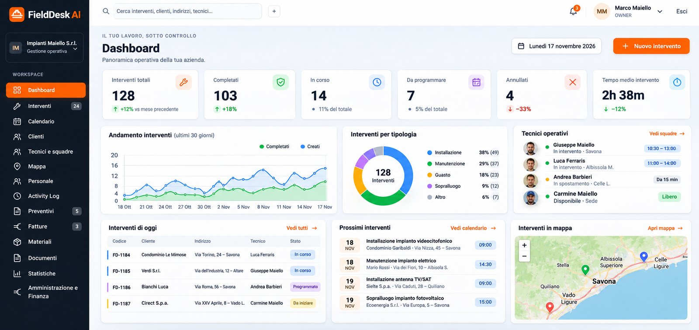
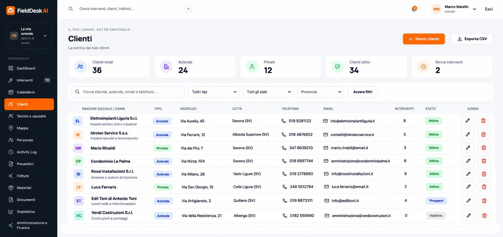
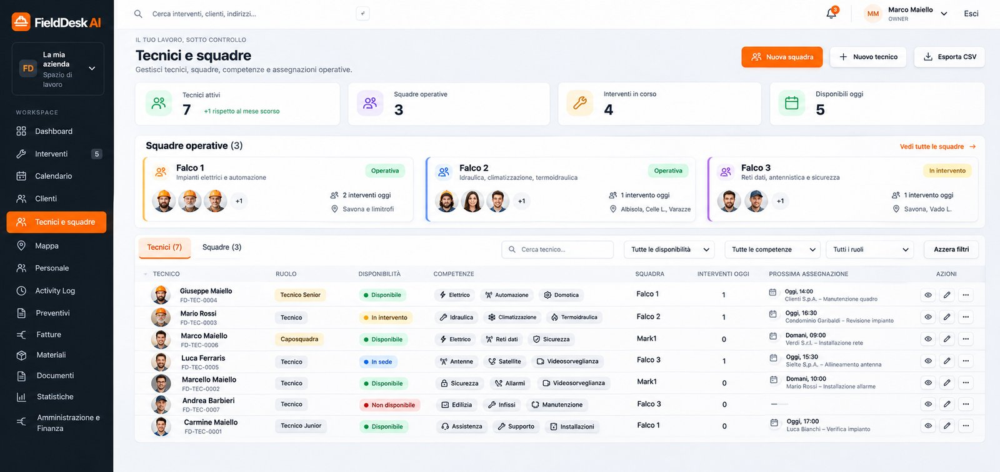
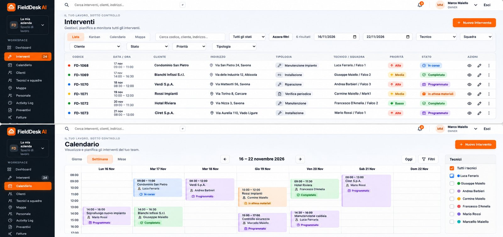
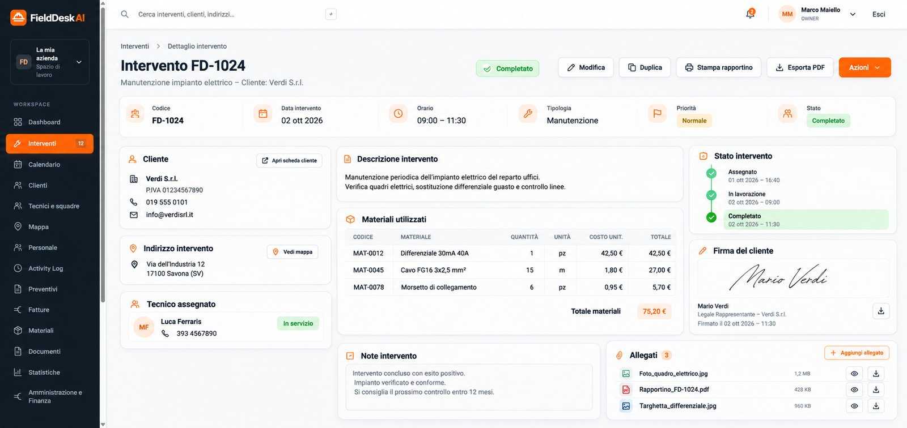
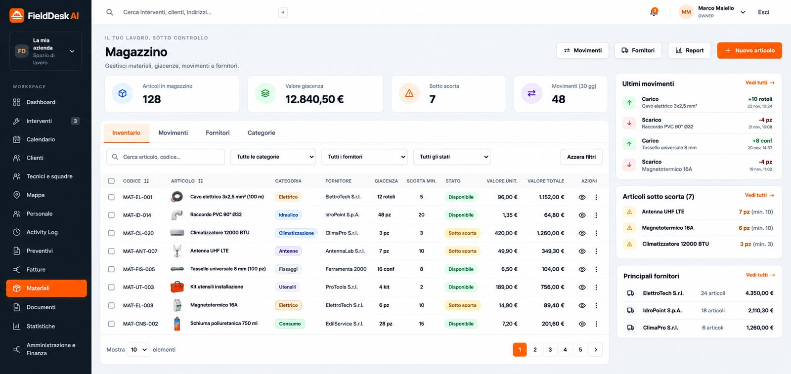

Il controllo della tua azienda. Ovunque ti trovi.
Meno burocrazia. Più organizzazione. Più produttività.
Clienti, interventi, tecnici, rapportini, magazzino e report in un'unica piattaforma.

Excel, WhatsApp, telefonate e fogli di carta
Troppe aziende gestiscono ancora interventi, appuntamenti e comunicazioni così. Il risultato? Informazioni disperse, tempo perso e difficoltà nel coordinare il lavoro. FieldDesk AI centralizza tutto e rende ogni attività più semplice da organizzare, eseguire e controllare.
Ogni richiesta, ogni lavoro, tutto lo storico
Organizza le richieste, consulta lo storico delle attività e tieni sotto controllo ogni lavoro.
- Rubrica clienti con aziende e privati
- Interventi collegati a ogni cliente

Coordina i tecnici, senza telefonate
Assegna gli interventi, monitora gli stati di avanzamento e organizza le squadre operative.
- Squadre, competenze e disponibilità
- Prossima assegnazione di ogni tecnico a colpo d'occhio

Calendario, liste, Kanban e mappe
Visualizza gli interventi nel modo che preferisci e pianifica le giornate della squadra.
- Elenco filtrabile per stato, priorità, tecnico e squadra
- Calendario giornaliero, settimanale e mensile
- Bacheca Kanban e mappa degli interventi

Il rapportino si compila sul posto
I tecnici compilano i rapporti direttamente dal cliente, con i materiali utilizzati e la firma del cliente.
- Materiali e costi dell'intervento
- Firma del cliente
- Stampa ed esportazione in PDF

Sai sempre cosa c'è in magazzino
Gestisci materiali, disponibilità e movimenti.
- Giacenze e articoli sotto scorta
- Carichi, scarichi e fornitori

I numeri della tua attività, sotto controllo
Consulta report, indicatori operativi e andamento degli interventi.
- Interventi completati, in corso e da programmare
- Andamento e tipologie di intervento
Dall'ufficio al cantiere, tutto è connesso
Accedi alla piattaforma da computer, tablet e smartphone, con un'interfaccia dedicata ai tecnici.
La tecnologia si adatta alla tua azienda, non il contrario
Tutta la tua attività in una piattaforma: niente più informazioni sparse.
Rapportini, materiali e firme digitali, direttamente sul posto.
Interventi, squadre e stati di avanzamento sempre sotto controllo.
Diversi piani di abbonamento, dalle piccole attività alle aziende con più tecnici e squadre.
Computer, tablet e smartphone, con un'interfaccia pensata per i tecnici.
Un sistema moderno e accessibile, progettato per crescere insieme alla tua impresa.
Vediamolo sul lavoro della tua azienda
Una dimostrazione gratuita e senza impegno: ti mostriamo come organizzare interventi, tecnici e rapportini con FieldDesk AI.